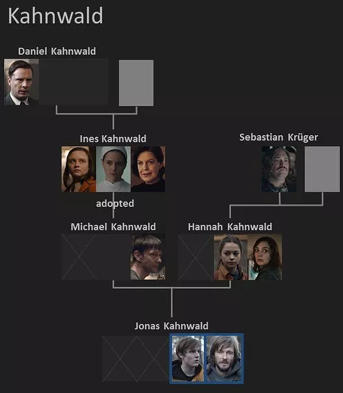
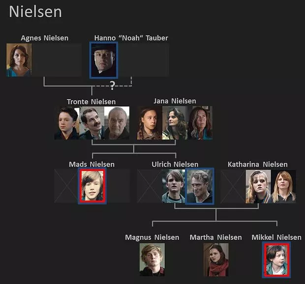
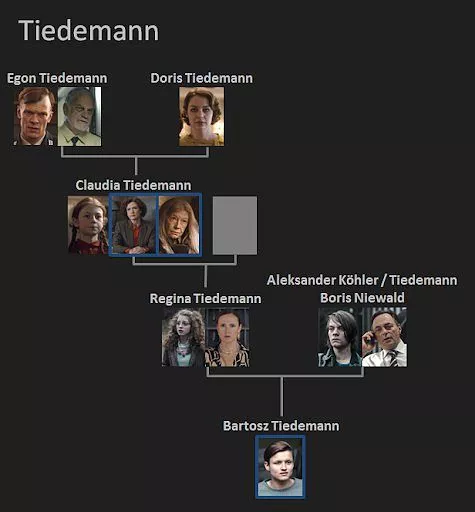

The main foundation of Netflix's Dark is its supremely confounding family tree. Almost
everyone in the town of Winden is connected somehow, through past, present, and future.
I'm sure many of us spent a lot of time paused at this scene, which shows the intertwined nature of these characters.
With three seasons and innumerable timelines, it's nigh impossible to keep track of this incestuous tangle, so here's a simple breakdown so you know who's mother is who, and so on.
This is Michael Kahnwald, Hannah Kahnwald, Jonas Kahnwald, and Michael’s adoptive mother Ines. Michael was actually Mikkel, Ulrich's son who travelled back and got stuck in the past. Thus, Martha is not just Jonas' lover, but also his aunt. Jonas' older, uglier version who appears to be present at most of the timelines is Adam, who is hell bent on destroying time. Hannah's daughter is Silja, who marries Bartosz.
This is Ulrich and Katharina Nielsen, and their kids, Magnus Nielsen, Martha Nielsen, Mikkel Nielsen. 11-year-old Mikkel gets stuck in 1986 and is adopted by Ines Kahnwald, growing up to become Michael Kahnwald. Ulrich Nielsen’s grandmother is Agnes Nielsen. It is not confirmed if Agnes is the biological mother of Tronte Nielsen, who is Ulrich's father. Ulrich is Jonas' grandfather.
This includes Regina Tiedemann, Aleksander Tiedemann, also known as Boris Niewald, and their son Bartosz. Regina’s mother is Claudia Tiedemann, who is assumed missing after she goes time travelling in the 80s. Claudia’s parents are Egon and Doris Tiedemann. After Bartosz and Silja are married, they have a son, who Silja names Hanno. As we know, Hanno is the real name of Noah, so Bartosz is Noah's father.
I truly hope this provides some clarity regarding what the heck was going on in Winden. I'm still confused.